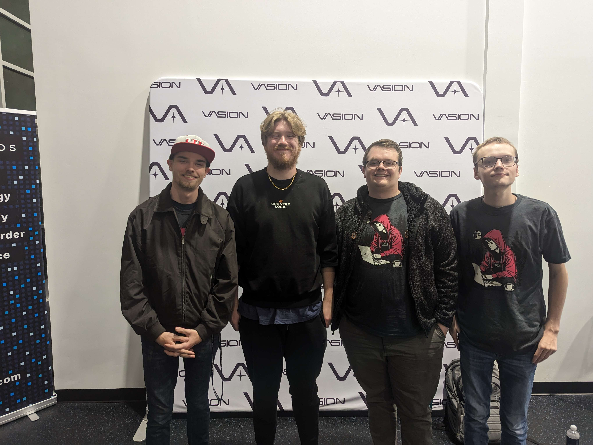

24 Hours, one goal. Build a website that congregates local events and puts that data into one accessible place. Our goal is to make it easy for the local citizens of St. George to know when and where events in and around the city are taking place. We hope this tool can be utilized by the people, for people.
